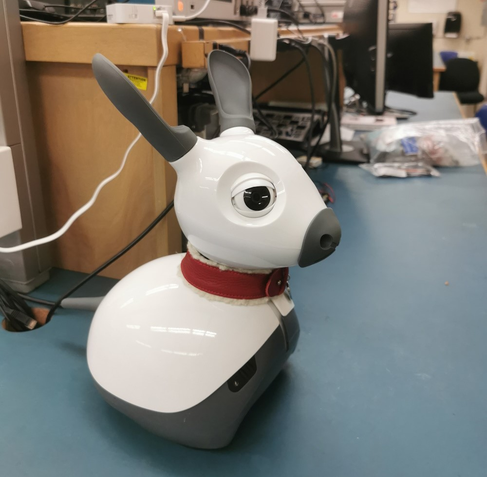
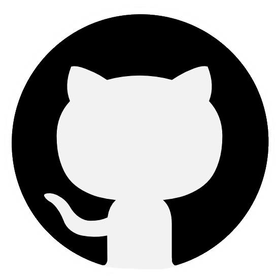

Capstone project: Enhancing social robots

Sep 2024 - April 2025
Hospitals can be overwhelming for children, often heightening anxiety during treatment. Our team addressed this matter by programming MiRo-E robot (from consequential robotics) to act as a therapeutic companion, guiding young patients through calming activities such as breathing exercises, storytelling, and interactive standby.